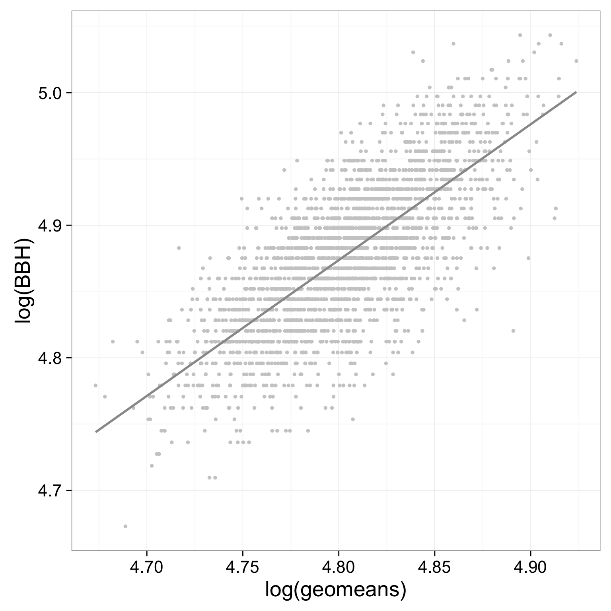
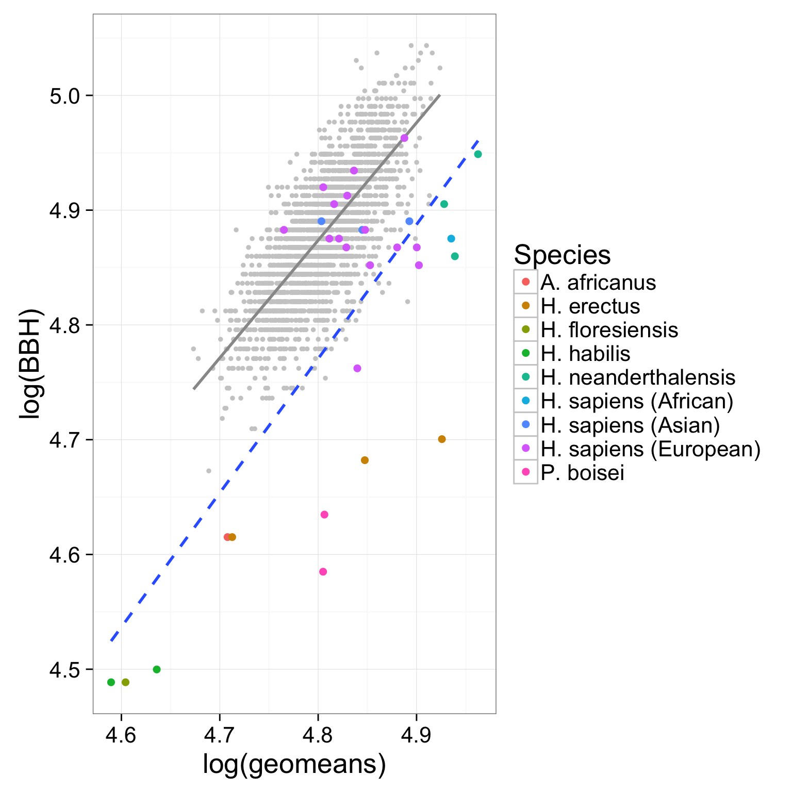

heads <- read.delim("http://hompal-stats.wabarr.com/datasets/Howell_craniometry.txt", sep=",")
fossils <- read.delim("http://hompal-stats.wabarr.com/datasets/Gordon_2008_cranial.txt", sep=",")
geomean <- function(x, na.rm = TRUE) {
product <- prod(x, na.rm = TRUE)
n <- sum(!is.na(x))
geo <- product ^ (1/n)
return(geo)
}The thing I was missing yesterday in class was that I forgot about the dplyr function called rowwise().
Normall, when you are mutating colums, it assumes you want to do operations columnwise (like multiply a whole column of values by another whole column of values). This works because the multipication function in R is already smart enough to do the multiplication element-by element.
But our geomean() function expects a vector of numeric values, not whole columns. So we must tell dplyr to do our operation rowwise()
library(dplyr)
heads <- heads %>%
rowwise %>%
mutate(geomeans = geomean(c(GOL, BBH, XCB, BNL, BPL, ASB)))
fossils <- fossils %>%
rowwise %>%
mutate(geomeans = geomean(c(GOL, BBH, XCB, BNL, BPL, ASB)))geomeans <- numeric(nrow(heads))
for(i in 1:nrow(heads)){
geomeans[i] <- geomean(heads[i,c("GOL", "BBH", "XCB", "BNL", "BPL", "ASB")])
}
heads$geomeans <- geomeans
geomeans <- numeric(nrow(fossils))
for(i in 1:nrow(fossils)){
geomeans[i] <- geomean(fossils[i,c("GOL", "BBH", "XCB", "BNL", "BPL", "ASB")])
}
fossils$geomeans <- geomeansmyRegression <- lm(log(BBH)~log(geomeans), data=heads)
summary(myRegression)##
## Call:
## lm(formula = log(BBH) ~ log(geomeans), data = heads)
##
## Residuals:
## Min 1Q Median 3Q Max
## -0.146617 -0.022905 0.001303 0.025667 0.117008
##
## Coefficients:
## Estimate Std. Error t value Pr(>|t|)
## (Intercept) -0.04479 0.08724 -0.513 0.608
## log(geomeans) 1.02469 0.01816 56.438 <2e-16 ***
## ---
## Signif. codes: 0 '***' 0.001 '**' 0.01 '*' 0.05 '.' 0.1 ' ' 1
##
## Residual standard error: 0.03653 on 2522 degrees of freedom
## Multiple R-squared: 0.5581, Adjusted R-squared: 0.5579
## F-statistic: 3185 on 1 and 2522 DF, p-value: < 2.2e-16library(ggplot2)
modernHeads <- ggplot(data=heads, mapping=aes(x=log(geomeans), y=log(BBH))) +
geom_point(color="grey80", size=1) +
stat_smooth(method="lm", se=FALSE, color="grey60") +
theme_bw(20)
modernHeads
modernHeads +
geom_point(data=fossils, mapping=aes(color=Species), size=2) +
stat_smooth(method="lm", data = fossils, se=FALSE, linetype=2)